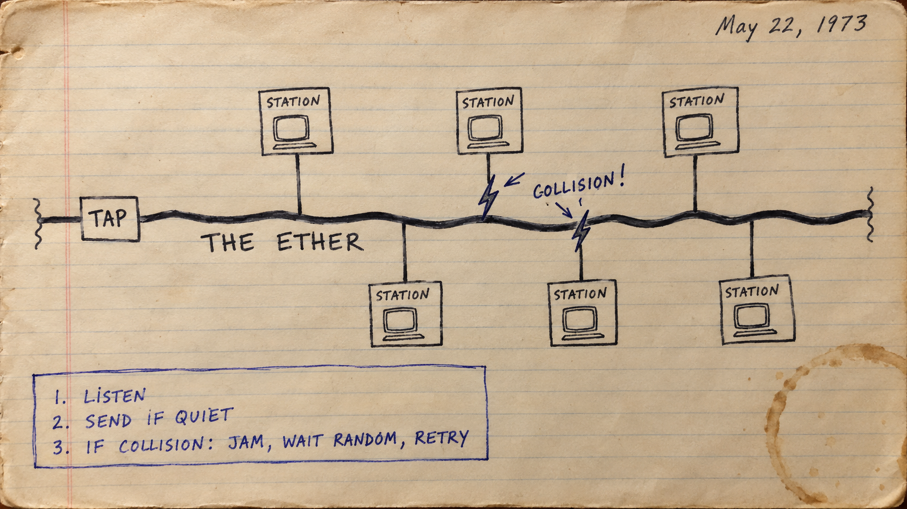

On paper: put the message back together. What made the order recoverable?
Start while we settle in. No marks; nothing to hand in.
→ next idea · ↓ optional model and full worked reference
U14b · IGCSE
One message. Three questions.
01 · Along the link
Serial or parallel? Who may send, and when?
02 · At the connection
Why USB? What do the NIC, MAC and router contribute?
03 · Across the network
What is in a packet? Why can arrival order differ?
0478 §2.1 + §3.4 · We group the hardware with the journey it enables. IP addresses and DNS follow in U14c.
COMPUTER SCIENCE · U14b · NETWORKS
Listen Before You Speak
The wire — copper, glass and air — the boxes on it, the address burnt into every card, the router at the door, and the rule for who may talk when
Navigation: → next idea · ↓ dig deeper
🕳️ · badges top-right show whose exam it's on
→ next idea · ↓ optional model and full worked reference
🎯 Today you will be able to
1. Say what copper, fibre-optic, radio, microwave and satellite links each carry, how far, and what spoils them — a difference with both sides named
2. Describe the hardware of a LAN — NIC and WNIC, switch, WAP, bridge, repeater, server — as descriptions, never as an acronym expanded; and the MAC address: 48 bits, hexadecimal, maker and serial, burnt in (0478 §3.4)
3. Describe the role and function of a router in the schemes' sentences — packets, the destination IP, the routing table, the addresses it hands out — and explain forwarding when the stem already gives the internet connection (0478 §3.4)
4. Say what Ethernet is (a protocol, not a cable) and walk CSMA/CD with the workstation as the actor on every line: listen, send if quiet, detect a collision, abort and jam, wait randomly, retry
Also: choose USB, HDMI or VGA for a peripheral and explain why. 9618 §4.1 joins the network hardware here.
Eight people, one wire. Everyone talks at once.
Press everyone talks at once: with no rule, every frame is on the wire in the same instant and a wire carrying eight signals carries nonsense — 0 delivered. Now listen before you speak, everyone at once again: the same eight, the same wire, 8 of 8 — with the listening, the collisions, the jamming signal and the random waits drawn as they happen. That rule has a name, and by the end of the lesson you will write it the way the examiner marks it.
📝 IN THE EXAMExplain why simultaneous senders collide on a shared medium.
🏛 IN REALITYThis is a historical shared Ethernet medium; switched full-duplex links have separate send/receive paths.
U14b · IGCSE
How many bits at once?
串行：逐位传送 · 并行：多位同时传送。Predict which byte will be complete first.
📝 IN THE EXAMSerial: bits one after another on one channel. Parallel: several bits simultaneously on separate channels.
🏛 IN REALITYSame illustrative clock here. Real serial links may run much faster; serial signalling can use a wire pair or several independent lanes.
U14b · IGCSE
More wires buy time — and problems
Serial 串行
Fewer signal paths: less cable cost. No skew between parallel bit paths; suited to longer links.
Parallel 并行
Several bits per tick, but more conductors. At distance, unequal delays cause skew; nearby wires can cause crosstalk.
A factory sensor is far from its controller. Choose a method, then finish: “This matters here because…”
📝 IN THE EXAMName the feature and its consequence in this scenario; do not just say “better”.
🏛 IN REALITYClock rate, signalling, cable and error control also matter. “Parallel is always faster” is not a physical law.
U14b · IGCSE
A different question: which way?
Bit arrangement and direction are independent: a link can be serial and full-duplex.
📝 IN THE EXAMSimplex: one way only. Half-duplex: both ways, one at a time. Full-duplex: both ways at once.
🏛 IN REALITYClassify the specified link, not every signal inside the whole device. A broadcast feed and its separate control link can differ.
U14b · Shared
One connection: data and power
Universal Serial Bus
Data bits follow one another on a serial channel. Many types of peripheral use the interface.
What the host does
Detects the attached device, identifies its type and uses an appropriate driver. The connection can supply power.
📝 IN THE EXAMUSB connects peripherals. USB data transmission is serial; automatic detection and supplying power are distinct benefits.
🏛 IN REALITYUSB-C is a connector shape, not a guarantee of speed, video or available power. The host, device and cable must support the required capability.
U14b · IGCSE
Convenient does not mean unlimited
Benefit
Useful consequence
Automatic detection
The operating system can recognise the device when plugged in.
Power carried by the connection
A low-power peripheral may not need a separate supply.
Common interface; compatible generations
Many peripherals can connect; compatible equipment can negotiate a supported speed.
Length
Ordinary passive USB cables have limited reach; extending a classroom link may need extra hardware.
Compatibility
The right plug alone is insufficient. An adapter cannot add missing host capability.
📝 IN THE EXAMState two different benefits if asked for two. “Automatically detected” is more precise than “automatically connected”.
🏛 IN REALITYType-A has a keyed orientation; Type-C is reversible. Backward compatibility depends on the equipment, cable and adapter.
U14b · AS
The monitor needs picture and sound
Port
Signal / use
Consequence
USB
Digital data; many peripherals; power
Keyboards, flash drives and other devices; capabilities depend on implementation.
HDMI
Digital video and audio
One suitable connection can feed a display and its speakers.
VGA
Analogue video
Audio requires a separate connection; digital display data must be converted.
2560 × 1600 pixels + built-in speakers: which connection suits the job, and why?
📝 IN THE EXAMRecognise USB, HDMI and VGA and explain the benefits in the named peripheral scenario.
🏛 IN REALITYResolution depends on both ends, version and cable. VGA has no single universal resolution ceiling; use supported modes, not the plug alone.
U14b · AS
Make the comparison earn four marks
9618 N24/12 Q3(b) · Paper 1 · 4 marks
The student needs to connect the computer to a monitor that has a screen resolution of 2560 × 1600 pixels. The monitor also has built-in speakers. The computer has a Video Graphics Array (VGA) port and a High Definition Multimedia Interface (HDMI) port.
Explain the benefits of connecting the monitor to the computer using the HDMI port instead of the VGA port.
📝 IN THE EXAMExplain the benefit: “audio and video together → no separate sound cable”, for example.
🏛 IN REALITYThis is a transparent self/teacher check, not an automatic judgement of prose. The scheme belongs to this particular question.
Copper, glass and air — what each carries, how far, and what spoils it
COPPER CABLE
Electrical signals down twisted pairs (or coaxial). Cheap, easy to install, every device has a socket.About 100 m a run before the signal is too small; picks up electrical interference; easy to tap.Twisted pair is a kind of copper — not "another medium" (N24).
FIBRE-OPTIC CABLE
Pulses of light in a glass thread. Higher bandwidth and transmission rate; kilometres before a repeater; immune to electrical interference; much harder to hack into.Dearer, more fragile, needs its own hardware at each end. The J22 six, with both sides.
RADIO WAVES · WI-FI
Electromagnetic waves on different frequencies, through the air. No cable; devices move; one access point serves a room.Walls and distance weaken it; shared with everyone in range, so slower and less secure; interference from other radios.
MICROWAVES
Higher-frequency radio, tower to tower in a straight line — a link across a valley or a city with no cable; needs line of sight, rain and obstacles weaken it. Also what the cell phone network uses between phone and tower.
SATELLITES
Radio up to orbit and back. Not fixed to one place — reaches remote and rural areas, ships, planes.High latency (the round trip is tens of thousands of km); dearer, extra equipment; bad weather; slower than fixed line; line of sight to the sky. The N22 three.
THE CELL PHONE NETWORK — J25/12 Q6(b), the four the report said few gave
The land is split into cells, sized for line of sight [1] · each cell has a tower with an antenna that receives and transmits [1] · data travels between the tower and the phone by low-power radio[1] · many phones talk to one tower at once [1]; move to the next cell and the next tower takes over.
WIRED OR WIRELESS — THE IMPLICATIONS (J23/13, both)
Wired: a higher, steadier transfer rate; harder to intercept; a socket and a cable per device; devices stay put. Wireless: devices move and join without cabling; a shared, slower, more variable channel; anyone in range can listen, so encryption matters. "Wireless is slower" is not enough — "the transmission speed of wireless networks can be slower" is (a recent paper's report's own sentence).
📝 IN THE EXAMState both sides of a media comparison, then connect them to the scenario.
🏛 IN REALITYDistance, rate and cost depend on the actual standard and installation; the examples are not universal limits.
The signal down the wire — and the repeater that squares it up again
📝 IN THE EXAMA repeater regenerates a signal for the next span.
🏛 IN REALITYIllustrative model with chosen attenuation/noise; these sliders are not engineering cable specifications.
U14b · AS
What would the receiver decide?
Teaching model · positive received level → 1; zero or negative → 0.
Sent bit
Received level
Your decoded bit
1
+0.08
?
1
−0.03
?
0
−0.12
?
Sketch the decision boundary. Circle the error. Explain what a repeater can restore — and what it cannot recover after a wrong decision.
These values are invented to expose the decision, not measured cable limits.
→ continue · ↓ check, then optional simulation source
U14b · AS
Check the decision, not the cable length
Decoded: 1, 0, 0. The second received level crosses the threshold.
A repeater regenerates a detected digital signal for the next span. Regeneration is not knowledge of the original message.
EXAM RESPONSEExplain regeneration and its purpose.
MODEL LIMITChosen attenuation, noise and distances do not specify real cable performance.
↓ optional implementation · → next concept
OPTIONAL MODEL · AS pseudocode
How a faded signal becomes the wrong bit
One trial sends 32 bits: 1, 0, 1, 1, 0, 0, 1, 0, repeated four times. Each INPUT Bit receives the next bit.
Distance
Medium
Repeater spacing
100, then 100
copper
0, then 100
400, then 400
copper
0, then 100
1000, then 1000
copper
0, then 100
10000
fibre
0
0 means no repeater. RAND(1) supplies a real value from 0 up to, but not including, 1. The exponent makes height fall with distance; ^ means “raised to the power”.
OPTIONAL MODEL · AS pseudocode
How a faded signal becomes the wrong bit · 1/3
DECLARE Trial, Distance, Repeater, Number, Position : INTEGER
DECLARE Bit, Received, Wrong : INTEGER
DECLARE Medium : STRING
DECLARE Fade, Noise, Segment, Height, Level : REAL
FOR Trial ← 1 TO 7
INPUT Distance
INPUT Medium
INPUT Repeater
IF Medium = "copper" THEN
Fade ← 220
Noise ← 0.20
ELSE
Fade ← 40000
Noise ← 0.04
ENDIF
Segment ← Distance
IF Repeater > 0 THEN
Segment ← Distance MOD Repeater
Start here. The program continues on the next slide.
OPTIONAL MODEL · AS pseudocode
How a faded signal becomes the wrong bit · 2/3
ENDIF
Height ← 2.718 ^ (-Segment / Fade)
Wrong ← 0
FOR Number ← 1 TO 32
INPUT Bit
Level ← Height
IF Bit = 0 THEN
Level ← -Height
ENDIF
Level ← Level + (-Noise + 2 * Noise * RAND(1)) * 2.2
Received ← 0
IF Level > 0 THEN
Received ← 1
ENDIF
IF Received <> Bit THEN
Wrong ← Wrong + 1
ENDIF
NEXT Number
Continue with the same variable values. The program continues on the next slide.
OPTIONAL MODEL · AS pseudocode
How a faded signal becomes the wrong bit · 3/3
OUTPUT Wrong
NEXT Trial
Continue with the same variable values. Worked result follows.
OPTIONAL MODEL · AS pseudocode
Worked result · How a faded signal becomes the wrong bit
0
0
15
0
20
0
0
These are the seven error counts, in input-row order. Copper: 0/0 at 100 m, 15/0 at 400 m, 20/0 at 1000 m (without/with regeneration). Fibre: 0 at 10000 m.
U14b · Shared
The computer needs a way onto the network
NIC · 网络接口卡
A network interface controller connects the device to the network. It turns data into signals for the link and received signals back into data.
Its link-layer identity
The interface uses a MAC address. A wireless interface uses radio; a wired interface uses its cable connection.
A laptop can have more than one interface: Wi-Fi and Ethernet are two different ways onto a link.
📝 IN THE EXAMA computer needs a NIC to access a network. Explain a purpose; expanding the acronym alone is not enough.
🏛 IN REALITYThe interface may be built into the device rather than fitted as a separate card. A MAC address identifies an interface on a link.
U14b · Shared
48 bits. Written in hexadecimal.
B8 : 27 : EBmanufacturer identifier3A : C4 : 91interface serial part
The standard factory address
Assigned by the manufacturer; identifies an interface on a link. Six bytes = 48 bits = twelve hexadecimal digits.
Why hexadecimal?
One hex digit represents four bits. B8 = 1011 1000: two readable characters instead of eight bits.
📝 IN THE EXAMFor the standard 48-bit manufacturer-assigned MAC: manufacturer code + serial part, hexadecimal, assigned at manufacture.
🏛 IN REALITYSoftware can use locally administered or randomised addresses. The address in use need not be the factory address.
→ next idea · ↓ optional model and full worked reference
U14b · Shared
Read the address. Then check the exception.
Predict the two three-byte parts. Beyond the exam: the local bit distinguishes local from universal administration.
📝 IN THE EXAMSix pairs of hexadecimal digits represent 48 bits. Identify the manufacturer and serial parts of a factory-assigned address.
🏛 IN REALITYThe lookup table is deliberately tiny. A locally administered address does not identify its maker through the prefix.
OPTIONAL MODEL · AS pseudocode
Read the address. Check the local bit.
Input addresses: b8:27:eb:3a:c4:91; f4:d4:88:5e:21:0a; 3e:02:b5:aa:bb:cc. Each has six two-digit hexadecimal bytes separated by colons.
Insert contracts: LEFT(text, 8) takes the first eight characters; RIGHT(text, 8) takes the last eight; MID(text, position, 1) takes one character, counting from 1. TO_LOWER changes case. ASC gives a character’s code.
Read the first byte as two hex digits. Repeatedly multiplying by 16 and adding the next digit builds its integer value. (FirstByte DIV 2) MOD 2 reads its second-lowest bit.
OPTIONAL MODEL · AS pseudocode
Read the address. Check the local bit. · 1/2
DECLARE Address, Prefix, Serial, Owner : STRING
DECLARE FirstByte, Digit, Position, Trial : INTEGER
DECLARE Character : CHAR
FOR Trial ← 1 TO 3
INPUT Address
Address ← TO_LOWER(Address)
Prefix ← LEFT(Address, 8)
Serial ← RIGHT(Address, 8)
FirstByte ← 0
FOR Position ← 1 TO 2
Character ← MID(Address, Position, 1)
IF Character >= '0' AND Character <= '9' THEN
Digit ← ASC(Character) - ASC('0')
ELSE
Digit ← ASC(Character) - ASC('a') + 10
ENDIF
FirstByte ← FirstByte * 16 + Digit
NEXT Position
Start here. The program continues on the next slide.
OPTIONAL MODEL · AS pseudocode
Read the address. Check the local bit. · 2/2
Owner ← "unknown maker"
CASE OF Prefix
"b8:27:eb" : Owner ← "Raspberry Pi"
"f4:d4:88" : Owner ← "Apple"
ENDCASE
IF (FirstByte DIV 2) MOD 2 = 1 THEN
Owner ← "locally administered"
ENDIF
OUTPUT Prefix, " | ", Serial, " | 48 bits | ", Owner
NEXT Trial
Continue with the same variable values. Worked result follows.
OPTIONAL MODEL · AS pseudocode
Worked result · Read the address. Check the local bit.
the component in a device that lets it connect to a network; holds the device's MAC address; converts the computer's data into the signal the cable carries, and back (0478: "transmit / receive data to and from the network; convert the data both ways; be assigned an IP address")
Connecting a device is a valid purpose. If more functions are asked for, explain addressing and signal conversion.
WNIC — wireless NIC
the same, with an antenna: receives radio waves and converts them to binary; converts binary to radio and sends it; checks the MAC address on incoming frames and ignores the rest; encrypts and decrypts (N21/11's four)
"acts like a NIC but wirelessly" (J22) · "provides an IP address" — it provides a MAC (N21)
switch
stores the MAC addresses of the devices on it · receives frames · forwards each only to the intended recipient · the central point of a star (J25/12) — U14a's TheSwitch, by name
"turns the network on and off" (J25) · "sends to everyone" — that is a hub
WAP — wireless access point
provides radio communication between the central device and the wireless nodes, and back; lets wireless devices join a wired network (J22, N23)
"provides a wireless access point" — the acronym, expanded (J22, N23)
bridge
joins two LANs or two segments running the same protocol into one
confused with the router — a router joins different networks
repeater
restores the digital signal so it can be transmitted over greater distances (the last slide)
"boosts the Wi-Fi" — say what it does to the signal
hub · server
hub: a repeater with many ports — everything in goes out of every port: the bus in a box, collisions and all. server: holds the data and services the clients (U14a)
N21/11's thirty computers connect through a switch, a hub or a router
📝 IN THE EXAMDescribe each device’s action; expanding its acronym does not describe its function.
🏛 IN REALITYRoles may share a physical box. A NIC’s factory address may be overridden; it does not assign a network IP address.
The frame — the switch reads the address; every other card drops it
📝 IN THE EXAMA switch uses the destination MAC to select an outgoing port; frames include addressing and error-checking information.
🏛 IN REALITYUnknown unicast and broadcast may be flooded; actual Ethernet uses CRC-32, not this demonstration’s CRC-8.
U14b · Shared
The router reads the destination
Your LANpackets →Routernext hop →Other network
Routing
Receive the packet → read its destination IP address → consult routing information → forward towards that destination.
The home box
Often combines a router, a switch and a Wi-Fi access point. It may also assign private IP addresses using DHCP.
Same physical box; separate jobs. “Provides Wi-Fi” does not describe how a router forwards a packet.
📝 IN THE EXAMSends data to a specific destination; can assign IP addresses; connects the LAN to the internet. Explain the action when the stem already names the connection.
🏛 IN REALITYRouting and DHCP are separate services. Each router chooses a next hop; it does not know or guarantee the fastest complete journey.
U14b · IGCSE
A piece of the message — with instructions
HEADER 包头
Source: A Destination: B Packet number: ③
PAYLOAD 数据
AFTER
TRAILER 包尾
Error-checking data End information
Splitting the message lets individual packets share network links with other traffic.
📝 IN THE EXAMKnow header, payload and trailer. The introductory header includes originator, destination and packet number.
🏛 IN REALITYThis is the exam’s combined packet model. Actual IP, transport and link protocols divide these jobs; not every real packet has all these fields.
U14b · IGCSE
Same destination. Different journeys.
📝 IN THE EXAMPackets can traverse several routers along different routes, arrive out of order, and be reordered once all have arrived.
🏛 IN REALITYEach router selects a next hop using routing information. IP alone does not guarantee ordering or delivery; transport/application protocols may recover missing data.
U14b · IGCSE
Draw the order. Then reconstruct it.
Pen first: write the arrival order, then the required order. Predict all three outputs.
📝 IN THE EXAMExplain why packet numbers allow reordering. A message with missing data is not complete.
🏛 IN REALITYThis small application rejects duplicates explicitly. Real reliable transports usually detect and discard duplicates while recovering missing data.
Two footnotes — where the router plugs in, and the two-address moment
WHICH DEVICE, AND WHY (N22/12)
Four computers, a server and a switch — a star. The router attaches to the switch, because the switch is connected to all the computers, so they share access to the router — or to the server, because the server processes the requests and authorises the traffic / runs the firewall / acts as the proxy. The report: the device was often right; the reason was the mark lost — "it connects the LAN to the internet" was in the question. Not a printer, not a computer: a device in the diagram.
THE TWO-ADDRESS MOMENT — WHY A LAN NEEDS BOTH
A frame carries a MAC address: it gets the data across this LAN, one hop, from the switch to one card — the switch reads it. A packet inside the frame carries an IP address: it gets the data across the world, router to router — the router reads it. At the door, the router strips the frame, reads the IP, and wraps the packet in a fresh frame for the next hop. The switch reads one address, the router the other. That is the difference between the two boxes, and next lesson is the second address.
Reality note: the box at home is all of these at once — a router, a switch (its four sockets), a WAP (its Wi-Fi), a firewall, and the thing that hands out addresses — in one plastic case. The exam names the roles separately because the scheme marks the roles separately; when it says "the router", answer with the router's list, not the case's.
📝 IN THE EXAMSelect the device and explain how it connects the specified networks.
🏛 IN REALITYRouters choose next hops using routing information, not a guaranteed shortest global path.
Ethernet is a protocol — and the workstation obeys it
ETHERNET · THE PROTOCOL AND ITS FRAMES
A protocol (a set of rules) · for data transmission over standard wired connections · on a shared half-duplex medium, uses CSMA/CD · data is sent in frames · each frame has a source and destination (MAC) address · and error-checking data to detect damaged frames . An Ethernet cable is a cable that carries the Ethernet protocol.
CSMA/CD — THE RULE, WITH THE ACTOR NAMED ON EVERY LINE
Carrier sense:the workstationlistens to the channel and sends only when it is free
Multiple access: more than one device shares one medium, so two can start together — a collision
Collision detection:the workstationdetects it, aborts, and sends a jamming signal so every station knows
Eachwaits a random time before resending — the range of possible random waits grows after repeated collisions
Five reports, one sentence: "CSMA/CD is a protocol, a set of rules, and as such it cannot 'do' anything — it is the workstation that listens, sends the jamming signal and waits." Write the device as the subject of every sentence.
📝 IN THE EXAMThe workstation listens, transmits, detects a collision, jams, waits randomly and retries.
🏛 IN REALITYCSMA/CD applies to shared half-duplex Ethernet, not modern switched full-duplex links.
U14b · AS
Two workstations heard silence
Shared half-duplex Ethernet. A and B both sense an idle channel, start sending, then detect a collision.
Draw the next actions for A and B. Show how they retry. Explain why choosing exactly the same fixed wait would be a poor rule.
A: detect collision → …B: detect collision → …
Authored practice · [4] · 7 minutes including reading. Write each action with a workstation as its subject.
→ continue · ↓ concise check and optional program
U14b · AS
Check the sequence and the reason
Each workstation stops the failed transmission and sends a jam signal.
Each chooses its own random back-off delay.
After waiting, it senses the medium again and retries when idle.
Different delays reduce the chance of another simultaneous attempt.
Our [4] check: one point per distinct line, maximum 4. Other questions may group these ideas differently; abort and jam are not automatically two marks.
Random waits can match. A retry is not guaranteed to succeed.
↓ optional workstation program · → full-duplex contrast
OPTIONAL MODEL · AS pseudocode
Trace one workstation before scaling up
One workstation has one frame to send. On each attempt it first receives a Busy value from the medium. Only when quiet does it attempt transmission and receive CollisionSeen.
Attempt
Inputs in arrival order
1
Busy TRUE
2
Busy FALSE; CollisionSeen TRUE; WaitSlots 1
3
Busy FALSE; CollisionSeen FALSE
WaitSlots is the already drawn random delay. After the first collision the allowed choices are 0 or 1. “wait” here records the delay before the next attempt.
OPTIONAL MODEL · AS pseudocode
Trace one workstation before scaling up · 1/2
DECLARE Busy, CollisionSeen, Delivered : BOOLEAN
DECLARE Failures, WaitSlots : INTEGER
Delivered ← FALSE
Failures ← 0
REPEAT
INPUT Busy
IF NOT Busy THEN
INPUT CollisionSeen
IF CollisionSeen THEN
OUTPUT "abort and jam"
Failures ← Failures + 1
INPUT WaitSlots
OUTPUT "wait ", WaitSlots, " slots"
ELSE
Delivered ← TRUE
OUTPUT "delivered"
ENDIF
ELSE
Start here. The program continues on the next slide.
OPTIONAL MODEL · AS pseudocode
Trace one workstation before scaling up · 2/2
OUTPUT "keep listening"
ENDIF
UNTIL Delivered
Continue with the same variable values. Worked result follows.
OPTIONAL MODEL · AS pseudocode
Worked result · Trace one workstation before scaling up
keep listening
abort and jam
wait 1 slots
delivered
One unsuccessful busy check, one collision and wait, then one successful transmission. The device is the actor at every step.
Optional investigation: measured full simulation
2 stations, one wire: 59 delivered, 4 collisions, mean wait 0.6
5 stations, one wire: 187 delivered, 34 collisions, mean wait 2.3
10 stations, one wire: 331 delivered, 208 collisions, mean wait 13.1
20 stations, one wire: 337 delivered, 315 collisions, mean wait 48.4
20 stations, a switch: 868 delivered, 0 collisions, mean wait 0.1
The richer simulator supplies evidence about many stations. Compare these measured results with the single-workstation trace.
Why full-duplex Ethernet needs no CSMA/CD — and where the rule still lives
THE SWITCH RETIRED CSMA/CD
On a star every cable joins exactly two devices — a card and a switch port — and carries both directions on separate pairs (full duplex). There is nobody to collide with; the switch buffers frames that arrive together and sends them out in turn. Modern switched Ethernet normally operates in full-duplex mode. CSMA/CD belongs to shared half-duplex operation; topology alone does not guarantee the duplex mode. The exam still asks it because the bus is the simplest shared medium there is, and the rule is the cleanest example of a protocol: rules that devices follow, so that a shared thing can be shared.
WHERE IT STILL LIVES — WI-FI'S CSMA/CA
Air is a shared medium, and a radio cannot hear a collision while it is transmitting — its own signal drowns everything. So Wi-Fi keeps carrier sense and multiple access but swaps detection for avoidance (CSMA/CA): listen, wait a random time before sending even when the air is quiet, and ask the receiver to acknowledge; a missing acknowledgement indicates an unsuccessful exchange, which may result from collision, interference or loss, and the sender backs off. Wi-Fi shares the listen-before-sending idea, but uses a different procedure; it does not detect a collision and send an Ethernet jam. And the hidden station problem — two phones that can both hear the access point but not each other — is why a crowded room's Wi-Fi crawls.
📝 IN THE EXAMDistinguish the Ethernet protocol from the physical cable and the devices that follow it.
🏛 IN REALITYFull-duplex switched Ethernet eliminates shared collisions; Wi-Fi uses different access procedures.
→ next idea · ↓ optional model and full worked reference
The wire — four acts, one medium
📝 IN THE EXAMTrace the station’s decision before the next slot.
🏛 IN REALITYThe model omits propagation delays and physical signal details; use it for the access rules.
🕳 Hawaii, 1971 · Palo Alto, 1973 — the Ether

A memo sketch in the style of Bob Metcalfe's own, May 1973: stations on the Ether, a collision, and the three rules.
1971, Hawaii. Norman Abramson's ALOHAnet joined the islands' campuses by radio with the simplest rule there is: just send; if it collides, send again after a random wait. It worked — and its ceiling was 18 %: past that, most of the air was collisions. The hook illustrates the collision problem; it is not a measured ALOHA throughput model.
1973, Palo Alto. Bob Metcalfe at Xerox PARC read Abramson's paper and added two words: listen first, and detect the collision — stop early instead of wasting the whole frame. He called the shared cable the Ether, after the substance nineteenth-century physics had imagined carrying light through empty space and then abandoned. The memo is dated 22 May 1973; the first version ran at 2.94 Mbit/s.
1980 → 1990s. DEC, Intel and Xerox published the standard; the medium was a thick yellow coaxial cable with "vampire taps" bitten into it, one shared wire per building — a real bus, and every collision the scheme describes was real. Then twisted pair and the switch made every cable a private one, and the rule went to sleep on the wire — and woke up again in the air, as Wi-Fi, where it cannot hear itself.
The lesson in it: sharing a medium needs agreed rules. Ethernet CSMA/CD and Wi-Fi CSMA/CA solve related problems with different procedures; dedicated full-duplex links remove the shared-collision problem.
U14b · IGCSE
The message gets through · 12 marks
📝 IN THE EXAMAttempt on paper or type before revealing the rubric. Credit distinct points; the maximum is shown.
🏛 IN REALITYOnly objective choices are checked automatically. Drawings and explanations need your or your teacher’s judgement; no AI reader is used.
U14b · IGCSE
How the exam asks this
Shape
How the stem reads
Marks
Where marks die
Describe / draw modes
“Describe parallel half-duplex…”
2–4
Omitting either simultaneous bits or direction/timing.
Choose and justify
“Explain why this method is suitable…”
2–4
Naming a method without a scenario-linked reason.
USB benefits and method
“State two other benefits; identify…”
1–3
Repeating the given benefit; calling USB parallel.
Packet structure / switching
“Complete and annotate the diagram…”
3–4
No different routes, arrival order or final reordering.
NIC, MAC, router
“Describe the purpose / features…”
2–4
Expanding an acronym; confusing MAC assignment with IP.
📝 IN THE EXAMMarks are typical ranges for these shapes, not a promise for every question.
🏛 IN REALITYUse the question’s named devices and conditions; a memorised slogan cannot choose a connection for you.
U14b · AS
How the exam asks this
Shape
How the stem reads
Marks
Where marks die
Media comparison
“Give differences / explain suitability…”
3–4
Only describing one medium.
Hardware roles
“Identify / describe the function…”
1–4
Repeating the device’s name instead of its action.
Router in context
“Identify the device; give a reason…”
2–5
Repeating “connects to the internet” from the stem.
Ethernet / collision handling
“Describe how a collision is managed…”
2–4
The protocol, rather than a workstation, becomes the actor.
Peripheral ports
“Explain the benefits of HDMI…”
4
No link from feature to the monitor and speakers.
📝 IN THE EXAMMarks are typical ranges for these shapes, not a promise for every question.
🏛 IN REALITYUse the question’s named devices and conditions; a memorised slogan cannot choose a connection for you.
→ next idea · ↓ optional model and full worked reference
U14b · AS · 25 marks
📝 IN THE EXAMMake comparisons explicit; name the device that performs an action.
🏛 IN REALITYWrite on paper or type, then compare the capped rubric. Prose is judged by a person; no automatic score is assigned.
U14b · IGCSE
Sorting cannot invent the missing word
① MEET② ?③ AFTER④ CLASS
What you know
Packet ② is missing. The sequence numbers reveal a gap.
What you do not know
Its payload. Sorting is not error correction.
Beyond the syllabus: a reliable protocol may request/retransmit data. Some applications prefer a small loss to a long delay.
📝 IN THE EXAMThe standard reassembly description waits for all packets, then orders them by number.
🏛 IN REALITYRetransmission belongs to a protocol that provides it. Do not claim every IP packet is acknowledged or retransmitted.
U14b · IGCSE
The words you can now explain
Term
中文
Say what it does
serial / parallel
串行 / 并行
One bit after another / several bits simultaneously.
simplex / half / full-duplex
单工 / 半双工 / 全双工
One way / take turns / both ways at once.
packet / payload
数据包 / 有效载荷
A piece sent through the network / its carried data.
USB
通用串行总线
Peripheral interface: serial data, detection, power.
NIC / MAC / router
网卡 / 物理地址 / 路由器
Joins a link / interface identity / forwards between networks.
U14b · AS
The words you can now explain
Term
中文
Say what it does
medium / repeater
介质 / 中继器
What carries a signal / regenerates it for another span.
Ethernet / CSMA/CD
以太网 / 载波侦听多路访问与冲突检测
Protocol family / shared-medium access procedure.
HDMI / VGA
数字影音 / 模拟视频接口
Digital audio + video / analogue video.
NIC / MAC / router
网卡 / 物理地址 / 路由器
Joins a link / interface identity / forwards between networks.
U14b · IGCSE
🧾 What survives outside the exam hall?
Keep
Separate bit arrangement from direction. Carry enough information to identify, route and reconstruct a message. Choose a connection for the task.
Keep the boundary too
The combined packet diagram is a teaching model. Serial need not mean one conductor. USB-C shape alone promises no particular capability.
U14b · AS
🧾 What survives outside the exam hall?
Keep
Compare media by constraints. Separate hardware roles even when one box performs several. Treat protocols as rules followed by devices.
Keep the boundary too
Shared-bus collisions explain historical Ethernet. Modern switched full-duplex links do not use CSMA/CD. Port shape alone is not a specification.
U14b · IGCSE
Now the message needs an address
Bits can travel. Packets can arrive out of order. You can explain how the message is put back together.
Next: IP addresses — private and public — and the name that becomes a number.
U14c · Internet, IP and DNS · 从名字找到地址
U14b · AS
Now the message needs an address
You have the medium, the hardware and the rules. The router still needs to know where to send the packet.
Next: IP addresses — private and public — and the name that becomes a number.
U14c · Internet, IP and DNS · 从名字找到地址
✕Live marking needs the marking server.
Two steps, on the teacher's Mac: 1. open the CS_Materials folder 2. double-click Start-LLM-Marking.command
This chip lights up by itself a few seconds after the server starts — no reload needed. Without it, the pattern marks still work; the reader adds the marker that reads for meaning — and photos of handwritten answers need it too.